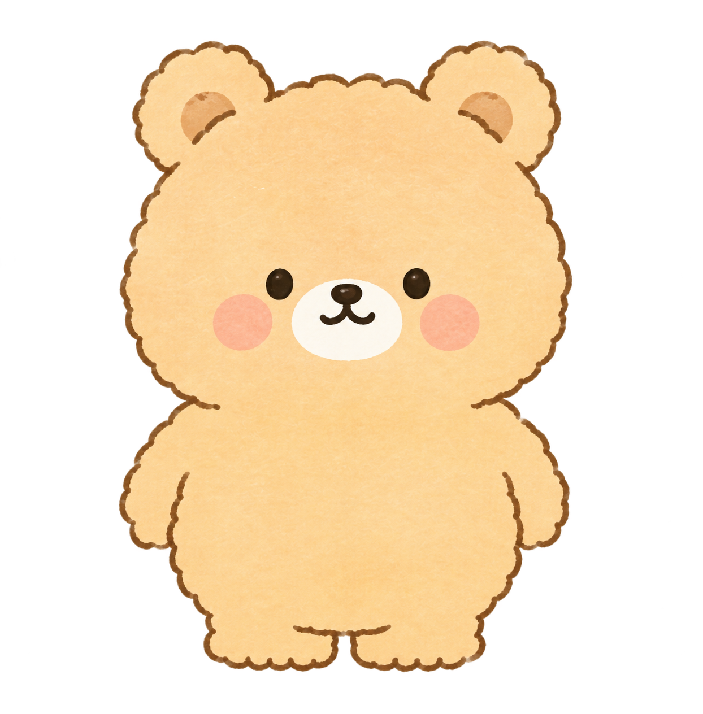

색은 앱 토큰 그대로다(src/app/globals.css). 아이콘도 Icons.tsx의 것을 그대로 썼다.
할 일에 시각은 없다 — 이 앱은 시각을 안 다루니 그 자리에
카테고리 · 주기 · 지난 날수 · 차례가 온다.
하단 탭은 평평하다. 튀어나온 가운데 버튼은 뺐다. 상태를 바꾸면 두 시안이 같이 바뀌고, 할 일 줄은 정말 눌린다.
가 — 정보가 먼저곰돌이는 카드 안에. 한 화면에 많이 담긴다
오늘도 조금씩 해나가요 ♥

+10P오늘은 비어 있어요
아래 일에서 담을 수 있어요
나 — 곰돌이가 먼저방에 크게 선다. 정보는 한 카드로 모은다
오늘도 조금씩 해나가요 ♥
오늘은 비어 있어요
아래 새로운 할 일로 담을 수 있어요
Dodo♥가 아니라 do·dodu다.
docs/next/홈.html이 쓰던 처리 그대로 —
do는 강조색, dodu는 초록(--ok), 가운뎃점은 강조색.
Header.tsx 윗줄이 원래 그렇다 —
장보기에는 담아둔 개수, 메모에는 안 본 것이 있다는 점이 붙는다.
원형 단추도 앱의 rounded-full bg-card shadow-card 그대로다.
아래에 뒀던 지름길 두 칸은 뺐다. 같은 화면으로 가는 문이 한 화면에 둘이면 어느 쪽이 맞는지 헷갈린다.
보여주는 쪽이 맞다. 안 보이면 체크가 옷으로 이어지는 게 안 보이고, 그러면 포인트를 넣은 값이 사라진다. 옷장으로 가는 문이기도 하다.
다만 숫자가 주인공이면 안 된다. 진짜 보상은 체크할 때
곰돌이 위로 떠오르는 +10P지, 위에 박힌 총합이 아니다.
그래서 칩은 작게 두고 곰토끼까지 180P 같은 말은 상점 안으로 보냈다.
앞 시안에서 색을 내가 새로 만들어 썼는데, 그게 틀렸다.
바탕 #faf6f0, 강조 #d97a5e, 별 #f0c58a —
전부 globals.css에 있는 값 그대로다.
카테고리 점도 constants.ts 팔레트를 쓴다.
Task에는 date만 있고 시각이 없다.
오후 7:00 같은 것은 이 앱이 다루는 값이 아니다.
그 자리에 앱이 실제로 그리는 것을 넣었다 —
카테고리 점 · 8일마다 · 3일 지남 · 내 차례.
우선순위가 높으면 제목 옆에 ★이 붙는다(즐겨찾기 별이 아니다).
1.6L / 2L 같은 물 마시기도 뺐다. 이 앱에 없는 기능이다.
다른 앱들이 시각을 두는 건 약속과 일정을 담기 때문이다.
이 앱은 집안일이다 — 8일마다 화장실 청소에 오후 3시를 붙이면
그 3시는 매번 안 지켜지고, 안 지켜지는 약속이 화면에 남는다.
시각을 넣으면 지각이 하루 단위에서 시간 단위로 촘촘해진다.
지금 이 앱은 3일 지남만 말하고 밀린 일을 빨갛게 안 칠하는데,
오후 7시 운동을 8시에 하면 그 줄은 이미 늦은 것이 된다.
docs/app/notify), 할 일마다 시각이 붙으면 할 일 개수만큼 예약해야 한다.
정확한 시각을 지키려면 안드로이드 정확 알람 권한이 필요한데,
그건 일부러 안 묻기로 한 것이다 — `8시 3분에 떠도 아무 문제가 없다`.
대신 `때`를 세 갈래로 둔다.
| 고르는 것 | 알림 |
|---|---|
| 하루 중 (기본) | 아침 알림에 담긴다 |
| 아침에 | 아침 알림 |
| 저녁에 | 저녁 알림 |
집안일의 진짜 필요는 몇 시가 아니라
쓰레기는 저녁, 빨래는 아침이다.
그리고 이건 이미 있는 아침·저녁 알림 둘과 정확히 맞아서 새로 만들 게 없다 —
아침 알림에 아침 것만, 저녁 알림에 저녁 것만 담으면 끝이다.
때는 묶음이라 지각이 안 생긴다. `아침에`는 약속이 아니다.
그래도 시각을 넣기로 한다면 최소로 — 기본은 없음, 시각이 있는 것만 알림, 그리고 시각은 내 것이지 방 공유가 아니다. 내가 정한 7시가 상대 폰을 울리면 그건 재촉이 된다.
가의 주간 줄은 시각 없이도 어느 날에 무엇이 있나를 말해준다.
점이 찍힌 날에 할 일이 있다. 시각을 안 넣어도 앞날이 보이는 자리다.
튀어나온 가운데 버튼을 뺐다.
아이콘도 Icons.tsx의 DayIcon · MonthIcon · LogIcon · GearIcon 그대로다 —
탭을 옮겨도 앱 안에서 같은 그림이 같은 뜻으로 쓰인다.
홈은 가운데, 색으로만 켜진다.
| 가 | 나 | |
|---|---|---|
| 곰돌이 | 카드 안, 작게 | 방에 크게 |
| 주간 줄 | 있다 | 없다 |
| 할 일 | 따로 카드 | 진행 막대와 한 카드 |
| 추가 | 전체보기 안에서 | 큰 버튼 |
| 상점 | 띠로 노출 | 위 칩으로만 |
가는 한 화면에 많이 담긴다. 오늘·이번 주·할 일·상점이 한 번에 보인다. 대신 곰돌이가 작아서 옷을 사도 티가 덜 난다.
나는 곰돌이가 주인공이다. 옷이 바뀌면 확 보이고 애착이 붙는다. 대신 스크롤이 는다 — 할 일을 보려면 한 번 내려야 한다.
포인트를 걸고 옷을 파는 앱이라면 나가 그 값을 더 한다. 할 일 앱으로서 야무진 건 가다.
| 무엇 | 쓰는 곳 |
|---|---|
base-sleep.png | 할 일 없는 날 |
| 조각 여섯 | Zzz · 땀 · 반짝 · 꽃가루 · 새싹 · 하트 |
room.png | 나의 곰돌이 뒤 방 |
방 소품은 지금 SVG로 임시로 그려뒀다. 곰돌이보다 늘 연하게 — 소품이 진하면 눈이 곰돌이를 못 찾는다.